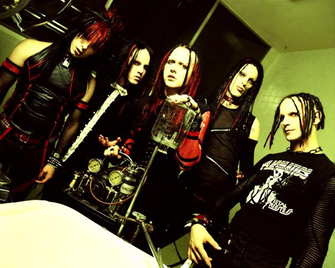

월욜날 런던서 롭좀비 공연이 있단걸 느므 늦게 알아버렸다.......OTL
2012년 런던 02 서 맨순이랑 Twins Evil Tour(...) 할때 공연을 첨 봤는데 정말 빵빵터지고 팬이 되었음 ㅋㅋㅋ
(공연후기: http://slimekyo.blog.me/100172670107 )
티켓 놓친게 억울해서 뭐라도 건져야겠다는 마음으로 마구 검색질을 하다보니 wednesday 13 공연이 28/29일에 있군
근데 29일날 캣츠 예매해놨는데......연속 이틀 갈수있을까;;; 느므 체력이 즈질이라 하루 놀면 이틀 쉬어야 합니다 -_-
오늘 물괴기 언니랑 수다떨다가 내가 프로필을 작성하면
1. 빨리지침
2. 배가자주고픔
3. 화장실자주감
위 세개를 꼭 넣어야 한다고 말했음 ㅋㅋㅋㅋㅋㅋ
검색 하다보니 갑자기 Murderdolls 앨범이 생각나서 찾아봄
일본살때 이 밴드 앨범을 정말 마르고 닳도록 들었었는데
중2감성 충만한 앨범임 ㅋㅋㅋㅋㅋㅋ 오랜만에 들으니까 빵빵터지고 좋네욤
좋아하는 곡 유툽 링크 걸어둡니다 :)
Twist My Sister
Slit My Wrist
People Hate Me
런던서 공연보러 다닐때 잼난건 밴드 커리어가 오래되고 팬들도 늙었지만 기본 패숑 하는짓은 안변한다는거 ㅋㅋㅋㅋ
플러스 아빠랑 이제 10-12살 정도 되어보이는 딸이 둘다 메탈 티셔츠 입고 아빠는 맥주 딸은 콜라 마시면서 메탈밴드 공연보는게 넘 귀엽당//